Product image unavailable
Kitchen gadgets
Budget-friendly
Chefman 4-Quart Compact Air Fryer
A practical first air fryer for smaller kitchens: the 4-quart basket is better suited to everyday sides, snacks and reheats than big family batches.
Good for: Couples, small households and first-time air-fryer buyers who value a smaller countertop footprint.
- Compact 4-quart basket, sized for roughly two to four servings
- Listed with digital touch controls and four one-touch presets
- Nonstick basket described as dishwasher safe
Keep in mind: The compact capacity is the trade-off. If you regularly cook for a crowd or want to make a full meal in one batch, compare a larger oven-style model.
Product review & buying notes
The Chefman 4-Quart Compact Air Fryer makes the most sense when you want air-fried sides, frozen snacks or leftovers without heating a full-size oven. Its 4-quart basket is listed for roughly two to four servings, giving smaller households a useful middle ground between a full-size oven and a much larger countertop appliance.
The listing describes digital touch controls, four one-touch presets and a Hi-Fry mode that reaches 450°F. The nonstick basket is also described as dishwasher safe. Those details may make routine cooking and cleanup simpler, but check the current listing for the exact preset options and care instructions.
This is a size-first choice, not the most flexible option for large households. Measure the counter area and allow room around the vents before buying; if you need to cook several portions at once, a larger basket or air-fryer oven is likely a better match.
What to check before buying
- Confirm the basket capacity works for your usual number of servings.
- Measure the appliance and leave the clearance required around its vents.
- Review the current preset list, temperature range and basket-care instructions.
Who should consider another option
Consider a larger air fryer or countertop oven if you often cook for more than four people or want to prepare several dishes at once.
Product details are based on manufacturer and retailer information, not hands-on testing by SmartHome Picks. Features and specifications can change; confirm the current listing before you buy.
Amazon affiliate link. We may earn a commission at no extra cost to you.

Product image unavailable
Kitchen gadgets
Mid-range
SPRX 10-Quart Air Fryer Toaster Oven
A space-conscious way to combine air frying and toaster-oven cooking, provided the 10-quart interior fits the portions and dishes you use.
Good for: Shoppers who want two countertop cooking styles in one appliance and have room for a larger footprint than a compact basket fryer.
- Air fryer and toaster oven in one footprint
- 10-quart capacity, bigger than a compact basket model
Keep in mind: The 10-quart capacity is larger than a compact basket, but it is not automatically a family-size oven. Interior dimensions and tray layout matter more than the headline number.
Product review & buying notes
The SPRX 10-Quart Air Fryer Toaster Oven is listed as a countertop appliance that combines air-frying and toaster-oven functions. That combination may appeal if you want one appliance for more than one cooking style instead of keeping separate devices on the counter.
The useful question is whether its interior suits the food and cookware you actually use. Capacity labels do not tell the whole story, so check the rack and tray dimensions, the usable cooking area and the specific modes included in the current listing.
This pick is most compelling when you have a dedicated counter spot and will use both functions. If your kitchen is tight or you mainly need a simple basket for fries and reheating, a compact air fryer may take up less space and be easier to store.
What to check before buying
- Compare the interior dimensions with your pans, dishes and typical portions.
- Confirm which air-fry and toaster-oven functions are included.
- Check counter footprint, door or lid clearance, and how the racks and trays are cleaned.
Who should consider another option
Choose a compact basket air fryer if storage space is limited or you only need basic air frying.
Product details are based on manufacturer and retailer information, not hands-on testing by SmartHome Picks. Features and specifications can change; confirm the current listing before you buy.
Amazon affiliate link. We may earn a commission at no extra cost to you.

Product image unavailable
Kitchen gadgets
Premium
Ninja FO101 French Door Premier Air Fry Oven (20.3 Qt)
The largest air-fryer oven in this group, aimed at shoppers who want countertop oven-style cooking and can spare the room for a 20.3-quart unit.
Good for: Households that cook larger portions and prefer an oven-style countertop appliance over a compact pull-out basket.
- French-door countertop air fry oven
- Listed 20.3-quart capacity, the largest of the three air fryers here
Keep in mind: Its size is the main compromise. A large capacity is only useful if the appliance, doors and racks fit comfortably in your kitchen.
Product review & buying notes
The Ninja FO101 French Door Premier Air Fry Oven is listed with a 20.3-quart capacity and a French-door design. Compared with a compact basket fryer, its appeal is the larger oven-style format for shoppers who want more room on the counter for everyday cooking.
Before treating the capacity as a reason to buy, check the actual rack and pan dimensions and review the cooking functions in the current product listing. The model name and capacity alone do not establish which foods or cookware will fit your routine.
This is a better fit for a kitchen with a permanent countertop spot than for someone who needs an appliance to tuck away after each use. Measure the full footprint and door clearance first; if you rarely cook larger portions, a smaller air fryer may be the more practical purchase.
What to check before buying
- Measure the appliance footprint and French-door clearance.
- Check rack and pan dimensions against the foods and cookware you use.
- Review the exact cooking modes and cleaning instructions in the listing.
Who should consider another option
A compact basket air fryer is likely easier to store if counter space is limited or your portions are usually small.
Product details are based on manufacturer and retailer information, not hands-on testing by SmartHome Picks. Features and specifications can change; confirm the current listing before you buy.
Amazon affiliate link. We may earn a commission at no extra cost to you.
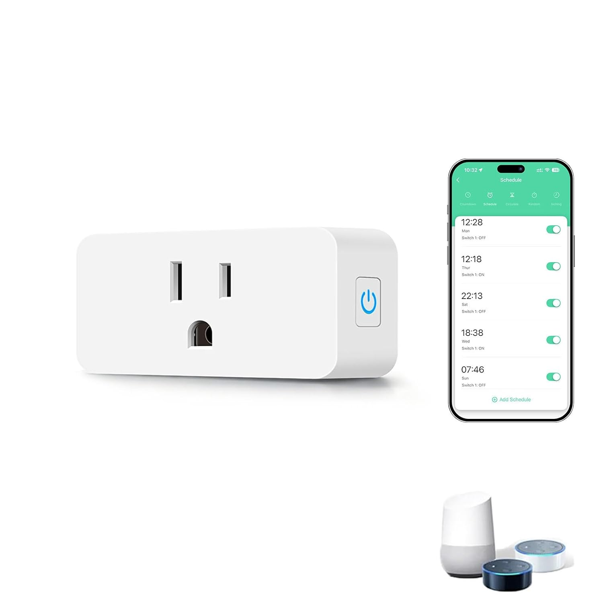
Product image unavailable
Smart home appliances
Budget-friendly
Smart Plug with Energy Monitoring, Wi-Fi and Bluetooth (1-Pack)
A single outlet with app-based control and energy monitoring for shoppers who want visibility into a compatible device’s power use.
Good for: People who want to check the energy use of a lamp, fan or small appliance and are comfortable verifying an unfamiliar brand and seller.
- Energy monitoring shows how much power a device draws
- Wi-Fi and Bluetooth connectivity listed
Keep in mind: The listing title does not identify a brand. Treat seller reputation, support, electrical ratings and app compatibility as essential checks rather than assumptions.
Product review & buying notes
This one-pack smart plug is listed with energy monitoring plus Wi-Fi and Bluetooth connectivity. The practical appeal is being able to control a compatible plugged-in device and see its reported power use from an app, rather than simply adding another remote-controlled outlet.
Because the product title does not name a brand, the listing needs a closer read than a familiar ecosystem accessory. Confirm the app, supported voice assistants, electrical rating and the seller’s support information before deciding whether it belongs in your home.
Energy monitoring is useful only when the plug is appropriate for the device connected to it. Check the rated amperage and wattage against your appliance, and make sure the plug will not block a neighboring outlet.
What to check before buying
- Identify the brand, seller and available customer-support details.
- Match the amp and wattage rating to the device you plan to plug in.
- Confirm app, Wi-Fi, Bluetooth and voice-assistant compatibility, plus the plug’s physical size.
Who should consider another option
Choose a clearly branded smart plug from an ecosystem you already use if support and platform compatibility matter more than energy monitoring.
Product details are based on manufacturer and retailer information, not hands-on testing by SmartHome Picks. Features and specifications can change; confirm the current listing before you buy.
Amazon affiliate link. We may earn a commission at no extra cost to you.
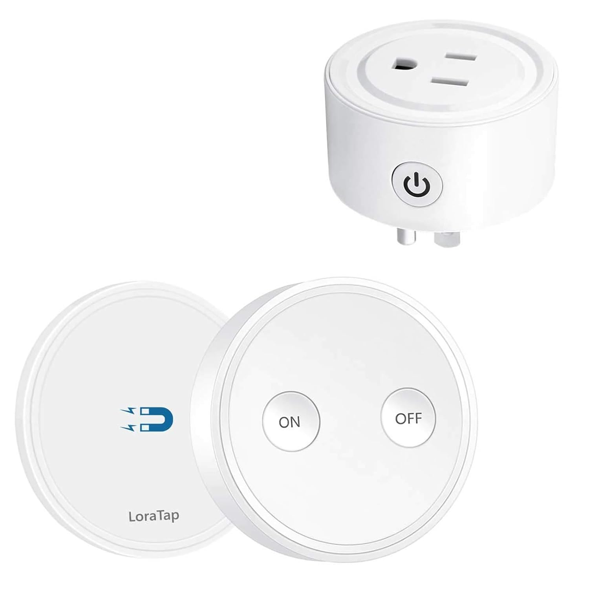
Product image unavailable
Remote control outlet
Mid-range
LoraTap Remote Control Outlet (No App, No Wi-Fi)
A straightforward remote-controlled outlet for turning a lamp or small appliance on and off without adding Wi-Fi or another app.
Good for: Anyone who wants simple room-to-room control and prefers a dedicated remote over phone-based smart-home features.
- Switched with a remote
- Listing says it needs no app and no Wi-Fi
Keep in mind: This is not a Wi-Fi smart plug. It does not provide the app control, schedules or remote-from-anywhere features people usually mean by “smart plug.”
Product review & buying notes
The LoraTap Remote Control Outlet is listed as a remote-operated outlet that needs no app and no Wi-Fi. That makes its appeal deliberately simple: switch a compatible lamp or small appliance on and off from across the room without setting up a network connection.
The trade-off is just as important as the convenience. A handheld remote is not the same as phone control, voice-assistant integration or app-based scheduling, so this is best viewed as a basic remote outlet rather than a connected-home upgrade.
Check the remote’s stated range and the outlet’s electrical rating before use. Also confirm how many outlets are included and whether the plug’s shape leaves room for nearby sockets.
What to check before buying
- Review the remote’s stated operating range and how it is powered.
- Match the outlet rating to the lamp or appliance you plan to control.
- Confirm pack quantity, plug dimensions and whether adjacent outlets remain usable.
Who should consider another option
Pick a Wi-Fi smart plug if you want app control, schedules or voice-assistant support.
Product details are based on manufacturer and retailer information, not hands-on testing by SmartHome Picks. Features and specifications can change; confirm the current listing before you buy.
Amazon affiliate link. We may earn a commission at no extra cost to you.

Product image unavailable
Smart home appliances
Premium
Tapo P110M Smart Plug, Matter Compatible, Energy Monitoring (4-Pack, 15A)
A four-pack of 15A Matter-compatible plugs with energy monitoring, best considered when you have several devices and a compatible smart-home setup.
Good for: Households that want to add multiple controllable outlets and are prepared to check Matter, hub and platform requirements first.
- 4-pack of 15A smart plugs
- Listed as Matter compatible
- Energy monitoring listed
Keep in mind: Matter compatibility does not guarantee every feature works with every hub or app. Your existing ecosystem and the need for all four plugs should guide the decision.
Product review & buying notes
Tapo’s P110M is listed as a four-pack of 15A smart plugs with Matter compatibility and energy monitoring. The multi-pack can be useful when you have several lamps or small appliances to automate, while energy monitoring adds a way to review the power use reported by connected devices.
Matter is designed to improve compatibility across smart-home platforms, but the experience still depends on the controller, app and features supported by your setup. Check the current Tapo listing and the platform’s compatibility information rather than assuming every function will be available in every ecosystem.
Buying four at once makes sense only if you have several suitable devices. Confirm the electrical rating for each appliance, whether a hub or controller is needed, and whether the plug dimensions will block nearby outlets.
What to check before buying
- Confirm Matter support with the exact hub, app or voice platform you use.
- Check whether a hub or controller is required for the features you want.
- Match the 15A rating to each connected device and consider whether you need all four plugs.
Who should consider another option
A single-pack plug may be a better starting point if you only need to automate one outlet or are still choosing a smart-home platform.
Product details are based on manufacturer and retailer information, not hands-on testing by SmartHome Picks. Features and specifications can change; confirm the current listing before you buy.
Amazon affiliate link. We may earn a commission at no extra cost to you.

Product image unavailable
Kitchen gadgets
Budget-friendly
BLACK+DECKER 1.5-Cup Electric Food Chopper
A small electric chopper for the prep jobs that make a full-size food processor feel like overkill—think a little onion, garlic or herbs.
Good for: People who cook smaller portions and want help with quick chopping without bringing out a large appliance.
- Electric food chopper
- Listed 1.5-cup capacity
Keep in mind: The 1.5-cup bowl is designed for small batches. It is not a slicer and will feel limiting when you need to prep a large quantity of vegetables.
Product review & buying notes
The BLACK+DECKER 1.5-Cup Electric Food Chopper is a compact option for small prep tasks such as chopping onion, garlic or herbs. Its main advantage is convenience for modest quantities: you can use a small appliance instead of setting up a full-size food processor.
The listed 1.5-cup capacity is the key buying detail. It helps set expectations for batch size, but it does not turn the chopper into a mandoline or a tool for uniform slices. Review the listing for the included parts and the manufacturer’s cleaning guidance.
If you regularly prep ingredients for several people, the small bowl may mean repeated batches. For occasional aromatics and small recipes, that limitation may be acceptable; for larger meal prep, a bigger processor or a multi-blade manual chopper may be more useful.
What to check before buying
- Decide whether a 1.5-cup bowl is enough for your usual recipes.
- Check which parts are dishwasher safe and how the blade assembly is cleaned.
- Review cord length, storage dimensions and the intended chopping functions.
Who should consider another option
Choose a larger food processor or a dedicated slicer if you often prep large quantities or need consistent slices.
Product details are based on manufacturer and retailer information, not hands-on testing by SmartHome Picks. Features and specifications can change; confirm the current listing before you buy.
Amazon affiliate link. We may earn a commission at no extra cost to you.
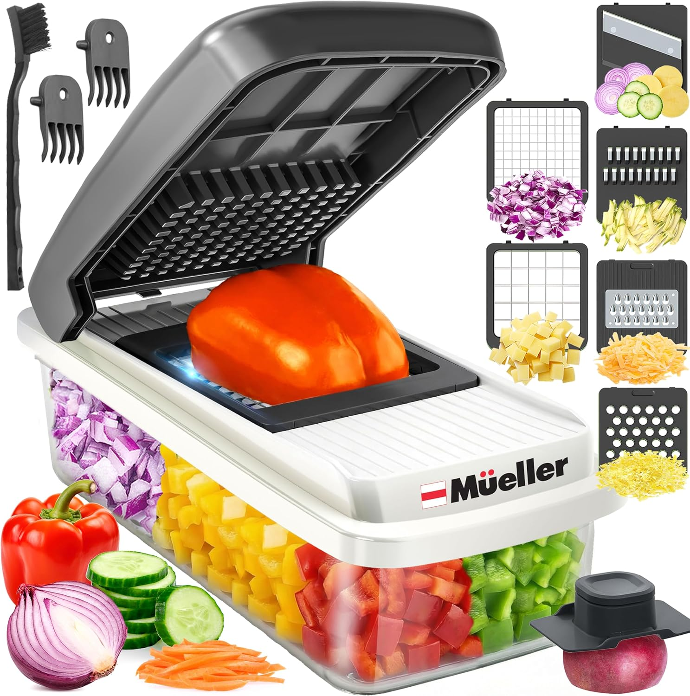
Product image unavailable
Kitchen gadgets
Mid-range
Mueller Vegetable Chopper Mandoline Slicer
A two-in-one prep tool for shoppers who want to dice and slice vegetables without buying separate countertop gadgets.
Good for: Home cooks who regularly prepare salads, stir-fries and vegetable sides and have room to store the inserts.
- Chopper and mandoline slicer in one
- Meant for both dicing and slicing
Keep in mind: The exact blade set matters more than the “chopper and mandoline” label. Check what is actually included and how safely the tool handles slicing.
Product review & buying notes
Mueller lists this tool as both a vegetable chopper and a mandoline slicer, giving it a broader prep role than a basic electric chopper. That combination may suit cooks who switch between dicing ingredients and slicing vegetables for salads or sides.
The value depends on the included blades and inserts, not just the number of functions named in the title. Look through the current listing to confirm the cut styles, container size and hand-protection accessories, then consider whether those options match the way you cook.
Multi-part prep tools can save space compared with separate gadgets, but their inserts still need to be cleaned and stored. If you only need occasional onion chopping, a simpler tool may be less hassle.
What to check before buying
- Verify the exact blades and inserts included in the current package.
- Review the hand guard and safety instructions for mandoline-style slicing.
- Check container capacity, cleaning steps and storage for the accessories.
Who should consider another option
A small electric chopper is simpler if you mainly mince aromatics and rarely slice vegetables.
Product details are based on manufacturer and retailer information, not hands-on testing by SmartHome Picks. Features and specifications can change; confirm the current listing before you buy.
Amazon affiliate link. We may earn a commission at no extra cost to you.
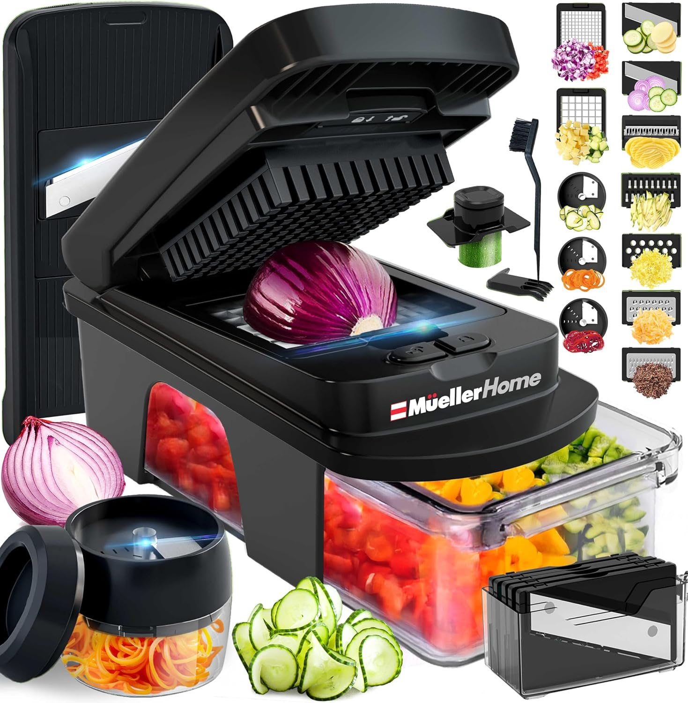
Product image unavailable
Kitchen gadgets
Premium
Mueller Ultimate 12-Blade Vegetable Chopper
A multi-blade chopper for cooks who want several cut styles in one kit—but only if the included blades solve jobs they do regularly.
Good for: Frequent meal preppers who will use more than one cutting style and have a safe place to store the blades.
- Listed as a 12-blade vegetable chopper
- More blades usually means more cut styles
Keep in mind: A 12-blade count does not automatically mean better results. The useful question is which blades are included, how they perform for your ingredients and how they are stored safely.
Product review & buying notes
The Mueller Ultimate is listed as a 12-blade vegetable chopper. A larger blade assortment can offer more ways to prepare ingredients, but the headline count alone does not explain which cuts are possible or whether the kit includes the sizes you need.
For a practical buying decision, compare the blade list with your regular meals: diced onions, sliced vegetables, salad prep or other repeat tasks. Also check the container capacity and whether the storage arrangement keeps sharp inserts organized between uses.
This kit makes more sense for someone who will use several of its options. If your prep routine is limited to occasional chopping, a simpler chopper may cost less, take up less cabinet space and be easier to clean.
What to check before buying
- Read the complete list of the 12 blades and identify the cuts each one makes.
- Check container capacity and whether it suits your typical batch size.
- Review blade storage, hand protection and cleaning instructions.
Who should consider another option
Consider a basic electric chopper or a simpler slicer if you only need one or two prep functions.
Product details are based on manufacturer and retailer information, not hands-on testing by SmartHome Picks. Features and specifications can change; confirm the current listing before you buy.
Amazon affiliate link. We may earn a commission at no extra cost to you.
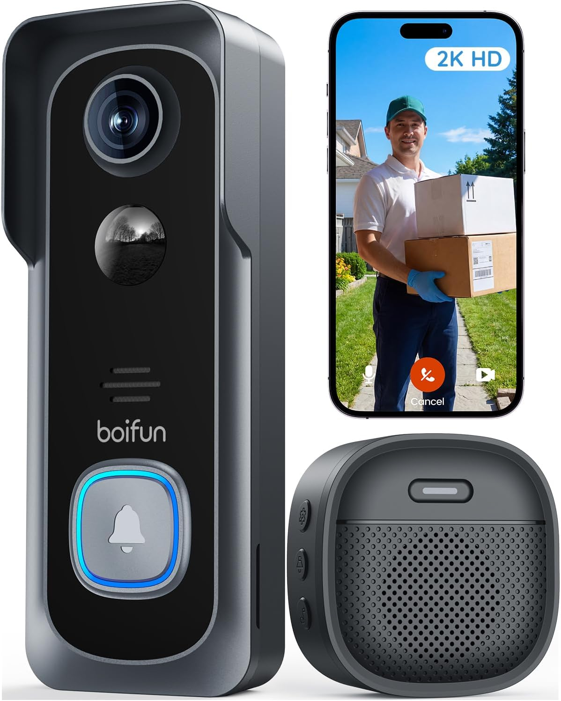
Product image unavailable
Smart home appliances
Budget-friendly
BOIFUN Wireless Video Doorbell Camera, 2K HD
A wireless-style 2K doorbell camera to compare if you are weighing video detail, power options and the cost of saving recordings.
Good for: Shoppers considering a video doorbell who are willing to verify the power method, Wi-Fi needs and storage terms before ordering.
- 2K HD video listed
- Listed as a wireless video doorbell camera
Keep in mind: “Wireless” can refer to battery power, wireless networking or both. Do not assume installation is wire-free or that video storage is included.
Product review & buying notes
BOIFUN lists this model as a wireless video doorbell camera with 2K HD video. The resolution gives you a starting point for comparison, but it does not answer the practical questions that affect day-to-day use: how the unit is powered, how it connects and where recorded clips are stored.
The word “wireless” is not specific enough to plan an installation. Check whether the doorbell uses a rechargeable battery, existing wiring or another power arrangement, and whether a chime or hub is part of the package. Also review the storage options and any subscription needed to access recorded video.
Before buying, make sure your Wi-Fi reaches the front door and that the storage approach fits your preferences. A camera that records live video but requires a paid plan for useful history may not suit every household.
What to check before buying
- Confirm the power method and whether existing doorbell wiring is needed.
- Check Wi-Fi requirements, chime or hub inclusion and installation details.
- Compare local storage, cloud storage and any subscription fees for recorded clips.
Who should consider another option
Consider a wired model if you already have compatible doorbell wiring, or a different camera if local recording is a priority.
Product details are based on manufacturer and retailer information, not hands-on testing by SmartHome Picks. Features and specifications can change; confirm the current listing before you buy.
Amazon affiliate link. We may earn a commission at no extra cost to you.

Product image unavailable
Smart home appliances
Mid-range
SwitchBot 2K Doorbell Camera with Monitor
A 2K doorbell camera bundled with a monitor, worth considering if you want to understand what the indoor screen adds to the usual phone-app experience.
Good for: People who prefer a dedicated indoor viewing option, provided the included monitor and its connection method meet their needs.
- 2K doorbell camera
- Listed “with Monitor”
Keep in mind: The product title does not explain the monitor’s exact role. Confirm whether it is an indoor display, what it can show and whether it adds any extra setup or cost.
Product review & buying notes
SwitchBot lists this as a 2K doorbell camera with a monitor. The bundled monitor is the detail that sets this listing apart, but the title alone does not tell you whether it is a live-view screen, a chime/display unit or a controller with additional functions.
Before comparing it with app-only doorbells, read the package contents and setup instructions. Check how the monitor connects, where it can be placed and whether the camera can still be used through a phone app when you are away from home.
As with any video doorbell, confirm power requirements, Wi-Fi compatibility and the rules for saving recordings. If the monitor is not something you would use, a simpler camera may be a better value.
What to check before buying
- Identify exactly what the included monitor displays and controls.
- Confirm power, installation, Wi-Fi and phone-app requirements.
- Check whether recording history requires a subscription or separate storage.
Who should consider another option
Choose an app-first doorbell if you do not need a dedicated indoor monitor.
Product details are based on manufacturer and retailer information, not hands-on testing by SmartHome Picks. Features and specifications can change; confirm the current listing before you buy.
Amazon affiliate link. We may earn a commission at no extra cost to you.
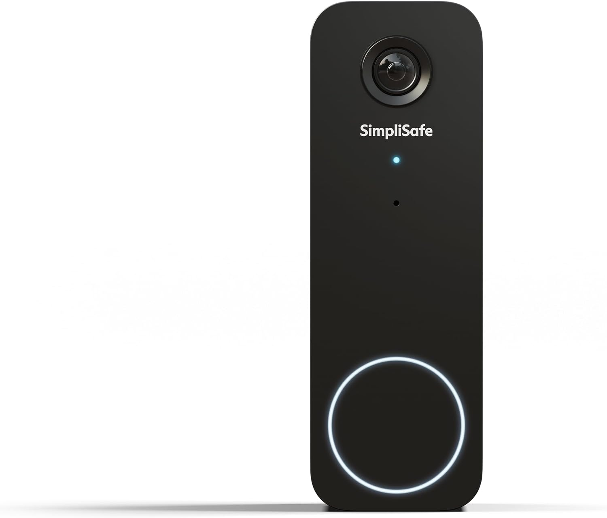
Product image unavailable
Smart home appliances
Premium
SimpliSafe Wired Video Doorbell Series 2 (2K)
A wired 2K doorbell option for homes with compatible existing wiring and shoppers who prefer not to manage a rechargeable doorbell battery.
Good for: Homeowners with an existing wired doorbell setup who are already considering SimpliSafe or have confirmed standalone compatibility.
- Wired video doorbell
- 2K video
Keep in mind: Wiring and transformer compatibility are non-negotiable checks. Also confirm which features work without a broader SimpliSafe system or paid plan.
Product review & buying notes
The SimpliSafe Wired Video Doorbell Series 2 is listed with 2K video and a wired installation. A wired model can be appealing if you want to avoid routine battery charging, but it is only convenient when the wiring and transformer at your door meet the product requirements.
Check the exact voltage and transformer requirements against your current setup before ordering. Then review which features are available on their own, which depend on a SimpliSafe security system and whether cloud recording or other functions require a paid plan.
This is a more considered purchase than a battery-powered doorbell because installation compatibility comes first. If your home lacks suitable wiring or you want a flexible, no-wiring installation, compare a battery-powered option instead.
What to check before buying
- Match existing wiring and transformer specifications to the current product requirements.
- Confirm standalone operation and any SimpliSafe system dependencies.
- Review recording, subscription and installation requirements before purchase.
Who should consider another option
A battery-powered doorbell may be easier if compatible wiring is unavailable or you do not want a wired installation.
Product details are based on manufacturer and retailer information, not hands-on testing by SmartHome Picks. Features and specifications can change; confirm the current listing before you buy.
Amazon affiliate link. We may earn a commission at no extra cost to you.
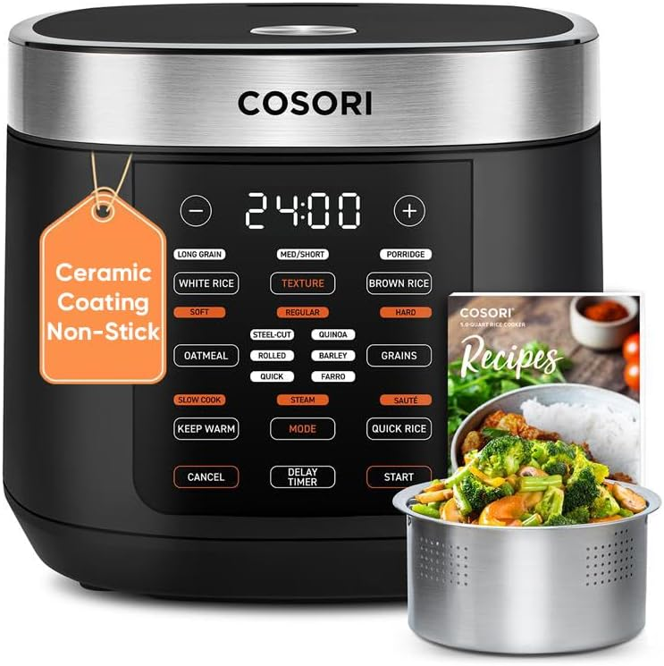
Product image unavailable
Kitchen gadgets
Budget-friendly
Cosori 10-Cup Rice Cooker with Fuzzy Logic (18-in-1)
A larger rice cooker with a broad listed function set for households that make rice often and want extra cooking modes in the same appliance.
Good for: Families or meal preppers who cook rice regularly and can identify several of the listed functions they will actually use.
- 10-cup rice cooker
- Fuzzy logic
- 18-in-1 design
Keep in mind: Despite the multi-function label, this is presented as a rice cooker. Confirm what “10 cups” measures and do not assume it pressure cooks or slow cooks.
Product review & buying notes
The Cosori 10-Cup Rice Cooker with Fuzzy Logic is listed as an 18-in-1 appliance. For households that cook rice frequently, the larger stated capacity and extra modes may offer more flexibility than a basic one-button rice cooker.
The capacity needs a careful read: check whether the 10-cup figure refers to uncooked or cooked rice, since those are very different serving amounts. Also review the full list of 18 functions and focus on the ones that fit your meals rather than assuming the appliance replaces every other countertop cooker.
If rice is the main job and you will use the extra modes, this could be a useful all-in-one countertop choice. If you specifically need pressure cooking or slow cooking, verify those modes in the listing before treating this as a substitute for a dedicated multi-cooker.
What to check before buying
- Confirm whether the 10-cup capacity is measured before or after cooking.
- Review the full 18-function list and identify the modes you will use.
- Check inner-pot coating, cleaning guidance and countertop dimensions.
Who should consider another option
Choose a dedicated pressure cooker or slow cooker if those are essential functions and are not explicitly included.
Product details are based on manufacturer and retailer information, not hands-on testing by SmartHome Picks. Features and specifications can change; confirm the current listing before you buy.
Amazon affiliate link. We may earn a commission at no extra cost to you.

Product image unavailable
Kitchen gadgets
Mid-range
Ninja MC1001 PossibleCooker PRO 8-in-1 (8.5 Qt)
An 8.5-quart, eight-function cooker for shoppers who want one larger countertop appliance and have checked that its modes match their recipes.
Good for: Households that prepare larger batches and want several cooking functions without assuming every multi-cooker feature is included.
- 8-in-1 cooker
- 8.5-quart capacity
Keep in mind: The “8-in-1” label does not confirm pressure cooking. Check the actual mode list and usable capacity before comparing it with an Instant Pot-style pressure cooker.
Product review & buying notes
The Ninja MC1001 PossibleCooker PRO is listed as an 8-in-1 cooker with an 8.5-quart capacity. Its appeal is the combination of a larger cooking vessel and multiple modes in one appliance, which may suit households that make batch meals or serve several people.
The product title does not establish whether pressure cooking is one of the eight functions. Read the current function list carefully and compare it with the dishes you make most often; the number of modes matters less than whether the right ones are included.
An 8.5-quart appliance also needs a realistic storage plan. Check its dimensions, lid storage and the amount of food you usually prepare so you do not end up with a large cooker that is awkward to keep or oversized for everyday meals.
What to check before buying
- Verify each of the eight functions, especially whether pressure cooking is included.
- Consider whether 8.5 quarts matches your usual batch size.
- Measure storage space and review cleaning and lid-handling instructions.
Who should consider another option
Choose a smaller rice cooker or a dedicated pressure cooker if you need a specific function more than a large multi-mode vessel.
Product details are based on manufacturer and retailer information, not hands-on testing by SmartHome Picks. Features and specifications can change; confirm the current listing before you buy.
Amazon affiliate link. We may earn a commission at no extra cost to you.
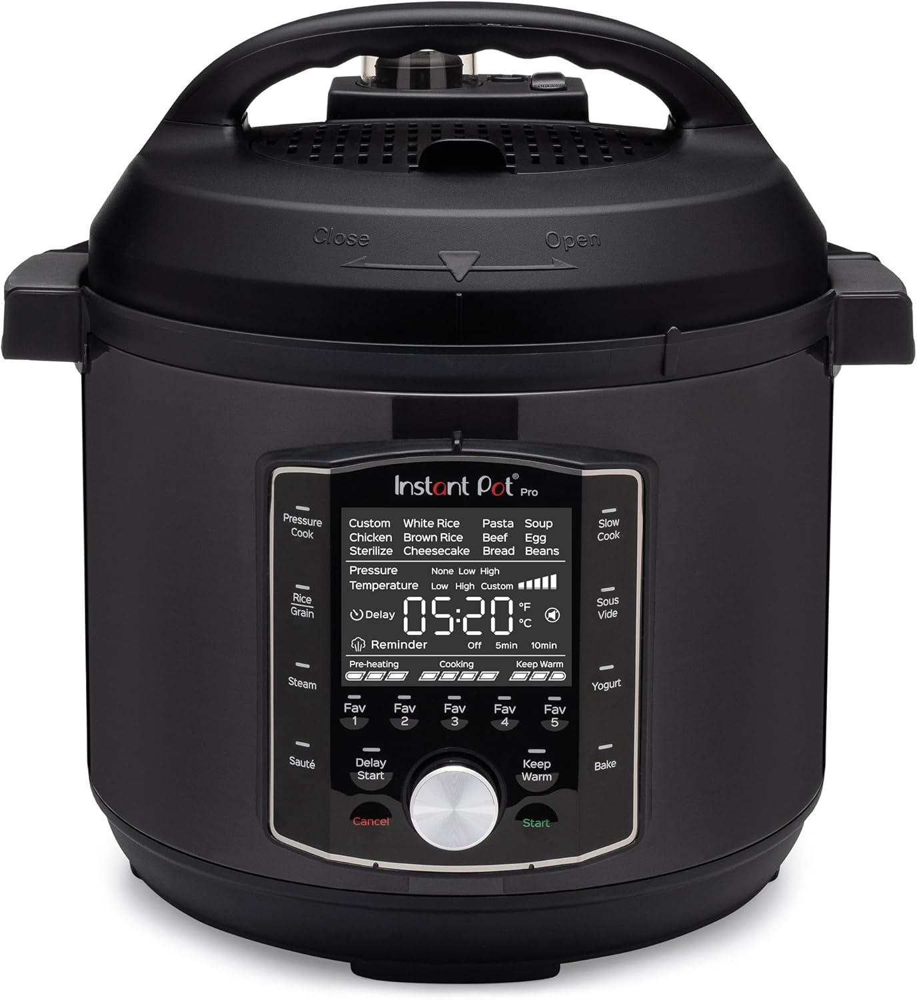
Product image unavailable
Kitchen gadgets
Premium
Instant Pot Pro 8-Quart 10-in-1 Electric Pressure Cooker
An 8-quart electric pressure cooker for larger batches of soups, stews and meal prep, with a function set to verify before you buy.
Good for: Households that cook for several people, batch-cook or want pressure cooking alongside the other modes listed for this model.
- 8-quart electric pressure cooker
- 10-in-1 design
Keep in mind: Eight quarts can be more appliance than a small household needs. Check the exact ten functions, kitchen storage and safe venting space.
Product review & buying notes
The Instant Pot Pro is listed as an 8-quart, 10-in-1 electric pressure cooker. The larger capacity may be useful for family-size meals, soups, stews and batch cooking, especially if you want a single appliance for several recurring kitchen jobs.
The “10-in-1” description is a starting point, not a substitute for the mode list. Check the current listing for all ten functions, the lid and venting details, and any accessories included in the package. Make sure the functions you expect are actually supported by this model.
Capacity is the main decision point. An 8-quart cooker takes up counter and cabinet space, and it may be unnecessarily large if you usually cook for one or two. Choose it for the batch size you genuinely make, not simply because the larger number sounds more versatile.
What to check before buying
- Review the exact ten cooking functions and included accessories.
- Decide whether an 8-quart capacity suits your household and batch sizes.
- Check lid, steam-release and cleaning instructions, plus storage dimensions.
Who should consider another option
A smaller pressure cooker may be easier to store and more practical if you rarely make large batches.
Product details are based on manufacturer and retailer information, not hands-on testing by SmartHome Picks. Features and specifications can change; confirm the current listing before you buy.
Amazon affiliate link. We may earn a commission at no extra cost to you.
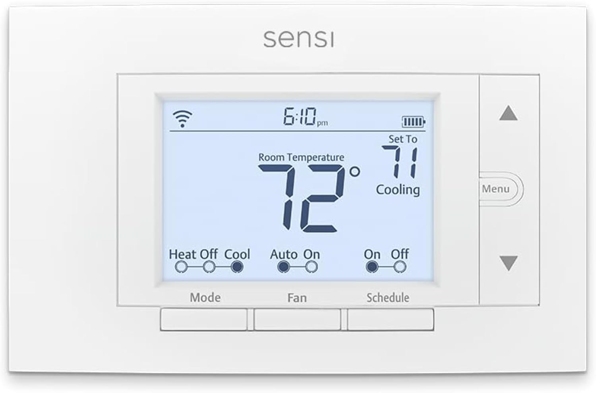
Product image unavailable
Smart home appliances
Budget-friendly
Sensi ST55 Smart Thermostat (Wi-Fi)
A Wi-Fi thermostat to consider when app-based scheduling is useful and your HVAC system and wiring are confirmed compatible.
Good for: Homeowners who want connected temperature scheduling and are comfortable checking system compatibility before installation.
Keep in mind: Thermostat compatibility varies by heating and cooling system. Verify wiring and any C-wire requirement before buying; do not rely on the model name alone.
Product review & buying notes
The Sensi ST55 is listed as a Wi-Fi smart thermostat. Its practical appeal is app-based temperature control and scheduling, which can make it easier to manage a home’s heating and cooling routine when you are away or following a changing schedule.
The first question is not the app—it is whether the thermostat works with your HVAC equipment. Check the manufacturer’s compatibility guidance for your exact system type and wiring, including whether a C-wire is required. A thermostat that does not match your setup is not a useful upgrade, no matter how convenient the connected features sound.
Once compatibility is confirmed, review the supported app and voice-assistant options and how schedules are created. Energy savings are not guaranteed; results depend on your home, climate and how you use the settings.
What to check before buying
- Confirm compatibility with your exact heating and cooling system.
- Check wiring requirements, including whether a C-wire is needed.
- Review app, voice-assistant and scheduling features in the current listing.
Who should consider another option
If your system is incompatible or wiring is unclear, consult the HVAC manufacturer or an installer before choosing a thermostat.
Product details are based on manufacturer and retailer information, not hands-on testing by SmartHome Picks. Features and specifications can change; confirm the current listing before you buy.
Amazon affiliate link. We may earn a commission at no extra cost to you.
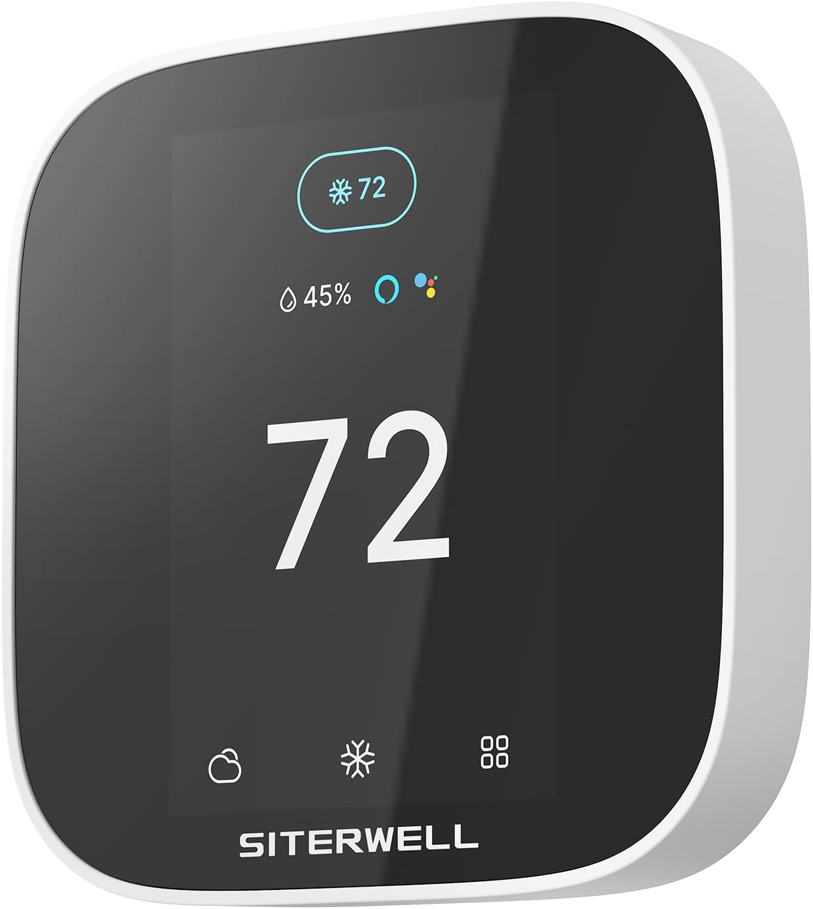
Product image unavailable
Smart home appliances
Mid-range
Siterwell Smart Thermostat, Wi-Fi Programmable
A Wi-Fi programmable thermostat for shoppers who want scheduled temperature changes, provided it supports their specific HVAC system.
Good for: People who want to set heating and cooling schedules and can verify system type, wiring and app support before installation.
- Wi-Fi programmable smart thermostat
- Programmable heating and cooling schedules
Keep in mind: “Programmable” does not guarantee compatibility with central HVAC, heat pumps or electric heat. Check the supported systems and wiring requirements first.
Product review & buying notes
Siterwell lists this as a Wi-Fi programmable smart thermostat. The useful feature to focus on is scheduled heating and cooling, which can help match temperature settings to the times you are usually home or away.
Thermostat systems are not interchangeable. Check the current listing for supported equipment types—such as central HVAC, heat pump or electric heat—and confirm the terminal and wiring requirements for your installation. If the listing is unclear, verify with the manufacturer before ordering.
After compatibility, look at the app experience and any voice-assistant support you expect to use. A lower-cost thermostat is not a good value if it cannot connect to your equipment or lacks the control features you need.
What to check before buying
- Confirm supported HVAC types and any system-specific exclusions.
- Review wiring diagrams and C-wire or adapter requirements.
- Check app availability, phone compatibility and voice-assistant support.
Who should consider another option
Choose a thermostat with clearly documented compatibility for your system if the Siterwell listing leaves key installation questions unanswered.
Product details are based on manufacturer and retailer information, not hands-on testing by SmartHome Picks. Features and specifications can change; confirm the current listing before you buy.
Amazon affiliate link. We may earn a commission at no extra cost to you.
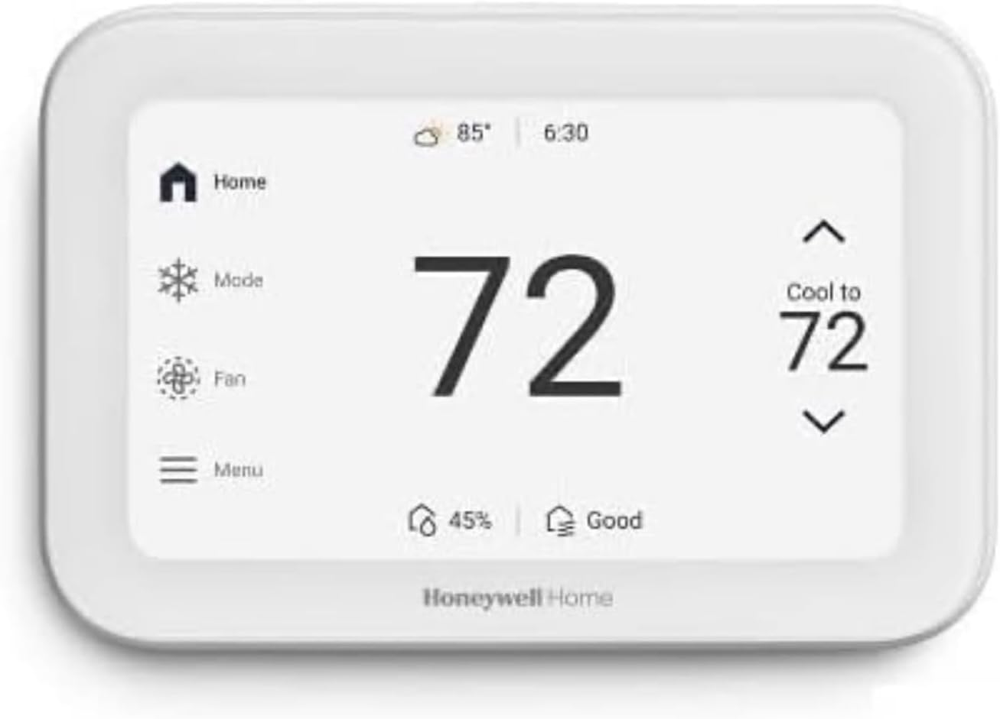
Product image unavailable
Smart home appliances
Premium
Honeywell Home ElitePro S1200 Smart Thermostat (THX1200W5/U)
A model-specific smart thermostat to investigate if the THX1200W5/U number matches your system and installation requirements exactly.
Good for: Shoppers who have identified the exact Honeywell Home model they need and can verify HVAC compatibility before purchase.
- Listed as a smart thermostat, model THX1200W5/U
Keep in mind: The model number is the critical detail. Similar thermostat names can cover different systems, so confirm the full part number, wiring and installation requirements.
Product review & buying notes
The Honeywell Home ElitePro S1200 is listed under model THX1200W5/U. This is a product where the exact model reference matters more than a broad “smart thermostat” description: compatibility can vary across heating and cooling equipment and wiring configurations.
Before comparing connected features, match the full model number to the manufacturer’s documentation and your existing thermostat terminals. Confirm whether a C-wire is required, which HVAC configurations are supported and whether any additional equipment is needed for installation.
If the model and system match, then review the app, scheduling and other smart features described in the current listing. If you cannot confirm the part number or compatibility, pause and ask the manufacturer or a qualified installer rather than guessing.
What to check before buying
- Match the complete THX1200W5/U model number to the product listing and manufacturer documentation.
- Verify HVAC system compatibility and wiring, including C-wire requirements.
- Confirm installation steps, included components and connected features.
Who should consider another option
Consider a thermostat with a compatibility checker and clearer installation documentation if you cannot verify this exact model.
Product details are based on manufacturer and retailer information, not hands-on testing by SmartHome Picks. Features and specifications can change; confirm the current listing before you buy.
Amazon affiliate link. We may earn a commission at no extra cost to you.
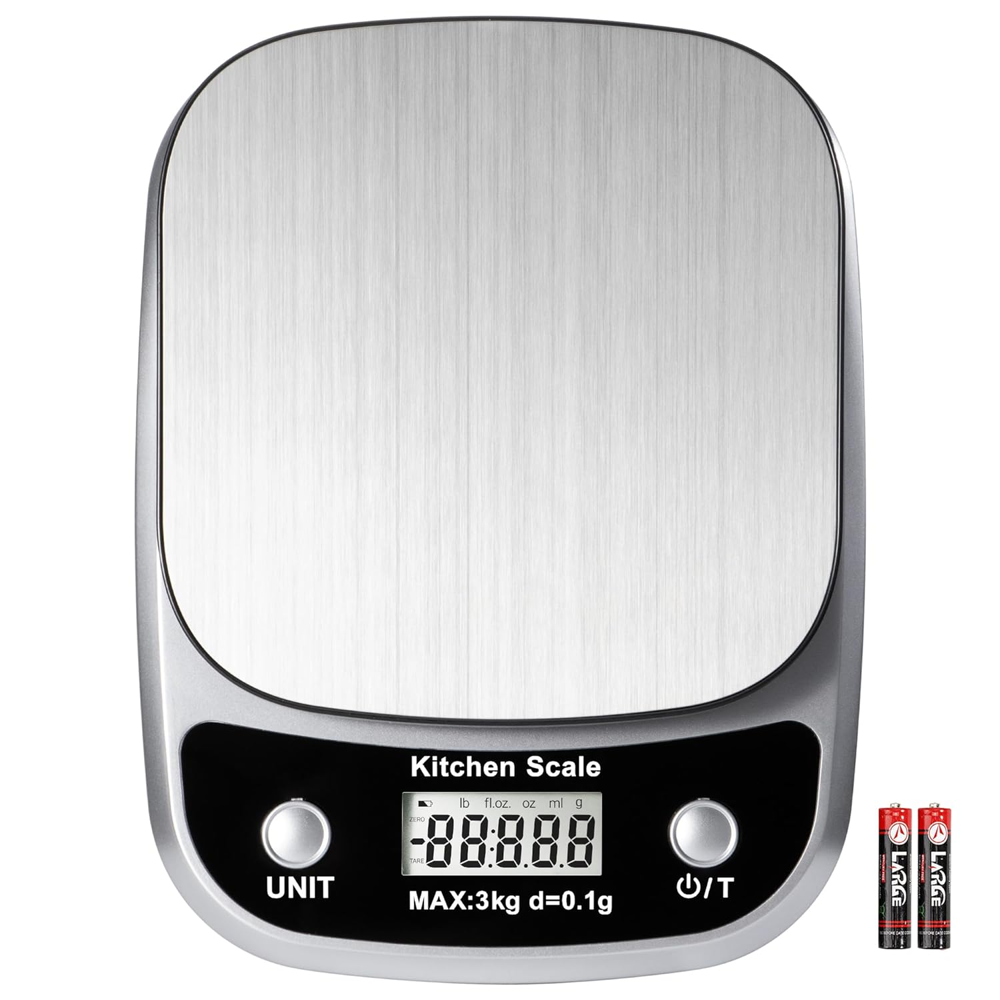
Product image unavailable
Kitchen gadgets
Budget-friendly
Digital Food Kitchen Scale (3 kg / 0.1 g)
A straightforward digital scale for home baking and portioning, with fine 0.1 g display increments and a 3 kg listed capacity.
Good for: Home cooks who weigh smaller ingredients and portions and do not need Bluetooth or a nutrition-tracking app.
- 3 kg capacity with 0.1 g resolution
Keep in mind: The listing title does not name a brand. Also, 0.1 g resolution describes the display increment, not necessarily verified measurement accuracy.
Product review & buying notes
This digital kitchen scale is listed with a 3 kg capacity and 0.1 g resolution. That combination may suit home baking, coffee ingredients or portioning when you want smaller increments than a basic whole-gram scale provides.
The product title does not identify a brand, so check the seller, warranty and support details carefully. Pay attention to the difference between resolution and accuracy: a display that changes in 0.1 g steps does not by itself prove the scale measures to that tolerance.
For everyday kitchen use, the practical details matter too. Confirm whether it switches between grams and ounces, how it is powered and whether the platform is large enough for the bowls or containers you use.
What to check before buying
- Confirm the supported units, including grams and ounces if you need both.
- Check the stated accuracy separately from the 0.1 g display resolution.
- Review power source, platform size, brand, seller and warranty information.
Who should consider another option
A branded scale with clearly documented accuracy and support may be preferable if repeatable precision is important.
Product details are based on manufacturer and retailer information, not hands-on testing by SmartHome Picks. Features and specifications can change; confirm the current listing before you buy.
Amazon affiliate link. We may earn a commission at no extra cost to you.
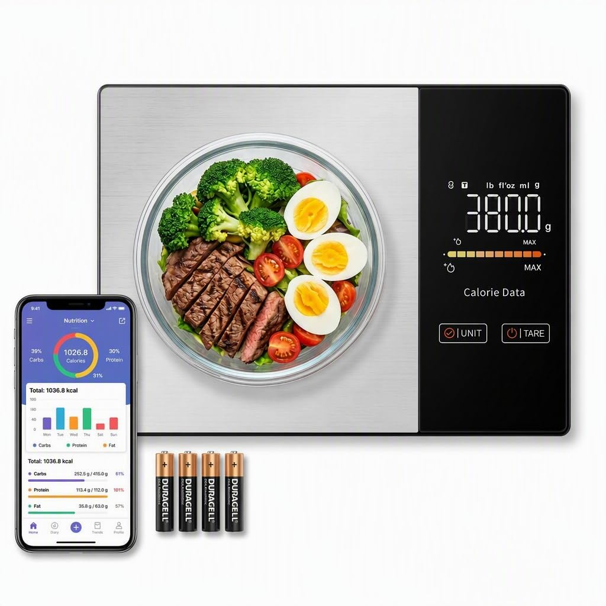
Product image unavailable
Kitchen gadgets
Mid-range
Smart Nutrition Food Scale with Bluetooth Calorie and Macro Tracking
A Bluetooth nutrition scale for shoppers who want food weighing linked to calorie or macro tracking, rather than a basic standalone kitchen scale.
Good for: People who already track meals digitally and are willing to use a compatible app for nutrition information.
- Bluetooth smart nutrition scale
Keep in mind: The app is central to the experience. Check its cost, phone support, food database and whether the scale remains useful without a connection.
Product review & buying notes
This product is listed as a Bluetooth smart nutrition scale with calorie and macro tracking. Its appeal is the link between weighing food and recording nutrition information, which may reduce manual entry for people who already use a food-tracking routine.
The product title does not name a brand, so verify the app and seller before buying. Check whether the app is free, which phones it supports, where its nutrition data comes from and whether the database covers the foods you actually eat. Bluetooth connectivity alone does not guarantee a smooth or useful tracking experience.
Consider how you would use the scale on days when you do not want to open an app. Confirm whether it can show weight on its own, how it is powered and whether the tracking features require an account or ongoing fee.
What to check before buying
- Identify the companion app and confirm phone compatibility.
- Check app pricing, account requirements and the source of nutrition data.
- Confirm whether basic weighing works without the app and review the seller details.
Who should consider another option
Choose a simple digital kitchen scale if you only need ingredient weights and do not want an app-based workflow.
Product details are based on manufacturer and retailer information, not hands-on testing by SmartHome Picks. Features and specifications can change; confirm the current listing before you buy.
Amazon affiliate link. We may earn a commission at no extra cost to you.
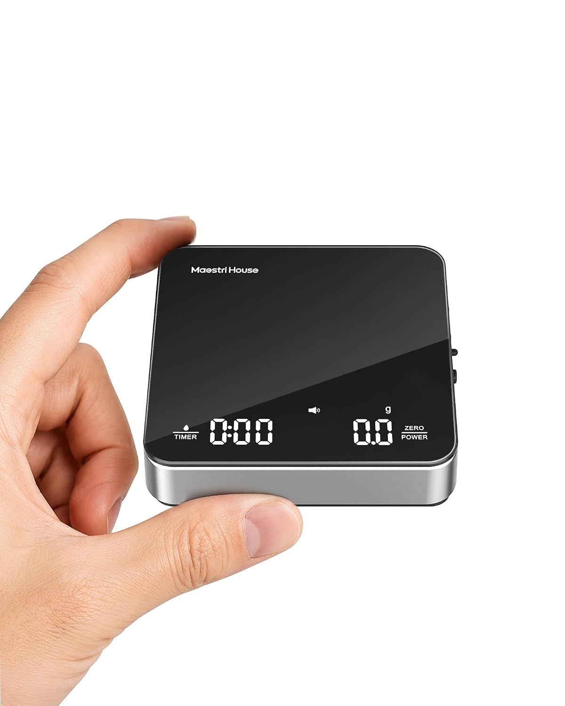
Product image unavailable
Kitchen gadgets
Premium
Maestri House S2 Nano Espresso Coffee Scale (1 kg / 0.1 g)
A compact coffee scale for dialing in espresso doses and shots, not a general-purpose scale for larger kitchen ingredients.
Good for: Home espresso users who need fine 0.1 g increments and a scale small enough to fit their brewing setup.
- Espresso coffee scale
- 1 kg capacity with 0.1 g resolution
Keep in mind: The 1 kg capacity and coffee-focused format make it less suitable for general meal prep. Check tray clearance, timer features and water resistance for your setup.
Product review & buying notes
Maestri House lists the S2 Nano as an espresso coffee scale with a 1 kg capacity and 0.1 g resolution. Its niche is weighing coffee doses and espresso output, where small changes in weight can be useful when repeating a brew recipe.
The compact format is only an advantage if it fits your machine and workflow. Measure the drip-tray area and the space beneath your portafilter, then check whether the listing includes a timer and how the scale is powered.
This is a specialist coffee accessory rather than a flexible kitchen scale. If you want one scale for flour, produce and larger containers, the 1 kg capacity may be restrictive; if espresso is the main use, the smaller format is more relevant.
What to check before buying
- Measure your drip tray and portafilter clearance before ordering.
- Confirm timer functions, display behavior and charging or battery details.
- Review water-resistance guidance and the 1 kg maximum capacity.
Who should consider another option
Choose a larger kitchen scale if you need to weigh ingredients, meal portions or containers beyond espresso doses.
Product details are based on manufacturer and retailer information, not hands-on testing by SmartHome Picks. Features and specifications can change; confirm the current listing before you buy.
Amazon affiliate link. We may earn a commission at no extra cost to you.
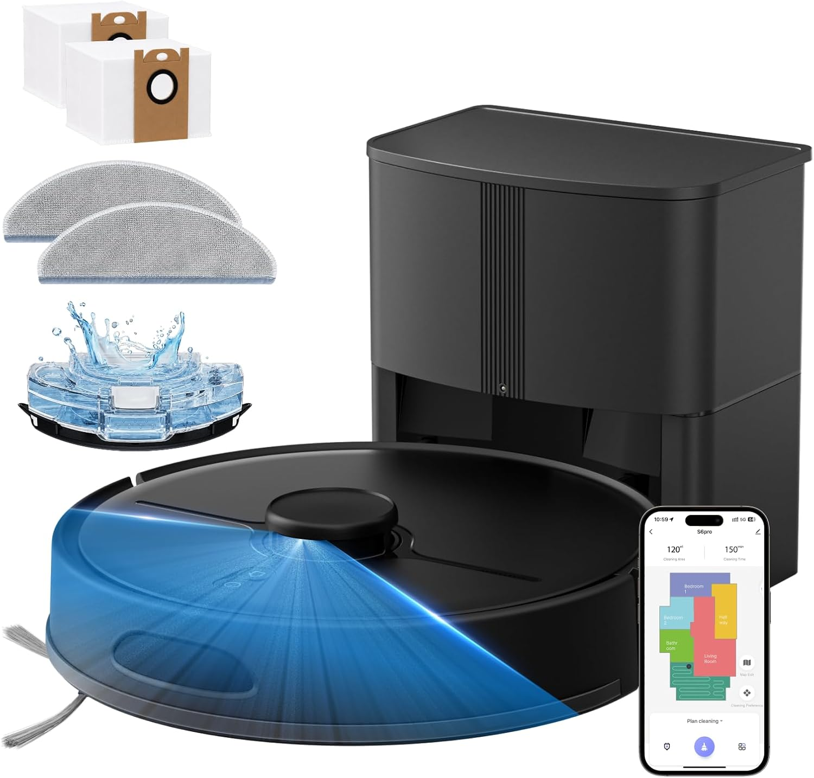
Product image unavailable
Smart home appliances
Budget-friendly
Robot Vacuum and Mop Combo, 8000Pa, Self-Emptying
A self-emptying robot vacuum-and-mop concept for shoppers who want less frequent bin emptying, but the unnamed brand makes verification especially important.
Good for: People exploring automated floor cleaning who can confirm the manufacturer, seller support, mapping features and ongoing consumable costs.
- Robot vacuum and mop combo
- 8000Pa suction (a manufacturer claim)
- Self-emptying base
Keep in mind: The title does not identify a brand, and 8,000Pa is a manufacturer-stated suction figure—not a reliable standalone measure of real-world cleaning.
Product review & buying notes
This listing describes a robot vacuum and mop combo with 8,000Pa suction and a self-emptying base. The base is the main convenience feature to investigate: check how it collects debris, how often it needs attention and whether replacement bags or filters add recurring costs.
The title does not name a brand, so look closely at the manufacturer, seller, warranty and support arrangements. Suction figures are difficult to compare across brands; also review mapping, obstacle handling, floor and rug guidance, and how the mop function works.
A robot cleaner still needs a suitable layout and regular maintenance. Before buying, check the base footprint, consumable availability and whether the device can handle the transitions and rugs in your home.
What to check before buying
- Identify the brand, seller, warranty and route for customer support.
- Review mapping, obstacle avoidance, floor and rug suitability, and mop operation.
- Check what the self-emptying base collects and the cost and availability of bags or filters.
Who should consider another option
A well-documented model from an established brand may be a safer comparison if warranty and replacement parts are hard to verify.
Product details are based on manufacturer and retailer information, not hands-on testing by SmartHome Picks. Features and specifications can change; confirm the current listing before you buy.
Amazon affiliate link. We may earn a commission at no extra cost to you.

Product image unavailable
Smart home appliances
Mid-range
Dreame D20 Air Plus Robot Vacuum and Mop (20,000Pa)
A robot vacuum-and-mop listing with a high stated suction figure; compare its mapping and mopping details before treating that number as a reason to buy.
Good for: Shoppers who want vacuuming and mopping in one robot and are prepared to check how it handles their floors, rugs and obstacles.
- Robot vacuum and mop
- 20,000Pa suction listed
Keep in mind: The 20,000Pa figure is a manufacturer listing claim, not a complete measure of cleaning performance. The mopping system, navigation and support matter too.
Product review & buying notes
Dreame lists the D20 Air Plus as a robot vacuum and mop with 20,000Pa suction. The combination may appeal if you want one device to handle routine floor maintenance, but the suction number alone cannot tell you how it will perform across hard floors, rugs, edges and everyday obstacles.
Look at the details behind the headline: how the mop works, whether a base station is included, how the robot maps rooms and what app controls are available. Also check whether the listed functions match the floor types and thresholds in your home.
Parts, filters, mop pads and customer support affect the ownership experience after the first clean. Compare their availability and upkeep requirements before choosing this over a simpler robot vacuum.
What to check before buying
- Read the mopping method and confirm what the base station does, if one is included.
- Check mapping, obstacle handling and suitability for your rugs and floor transitions.
- Review app features, replacement parts, consumables and support options.
Who should consider another option
A vacuum-only robot may be a better fit if you do not need mopping or want a simpler maintenance routine.
Product details are based on manufacturer and retailer information, not hands-on testing by SmartHome Picks. Features and specifications can change; confirm the current listing before you buy.
Amazon affiliate link. We may earn a commission at no extra cost to you.
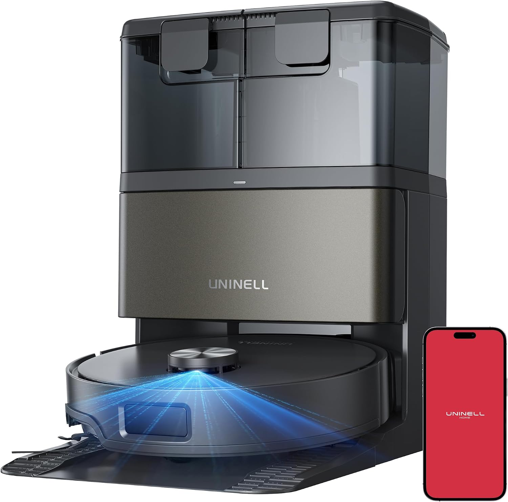
Product image unavailable
Smart home appliances
Premium
Uninell Zenith10 Robot Vacuum and Mop with Auto Wash Dock
A robot vacuum-and-mop with an auto-wash dock, aimed at shoppers who value dock automation and have room for the extra hardware.
Good for: Households interested in reducing hands-on mop maintenance and willing to check exactly which dock tasks are automated.
- Robot vacuum and mop
- Auto wash dock meant to wash the mop for you
Keep in mind: “Auto wash” does not explain whether the dock also dries pads, empties debris or manages water. Confirm the functions, footprint and recurring upkeep.
Product review & buying notes
Uninell lists the Zenith10 as a robot vacuum and mop with an auto-wash dock. The dock is the feature to evaluate closely: find out whether it washes the mop only or also dries it, empties debris or manages clean and dirty water. Those details determine how much work it actually removes from your routine.
An automated dock can also take up more floor space and add tanks, filters or other parts to maintain. Check its dimensions and the manufacturer’s instructions for refilling, emptying and cleaning before deciding where it would live in your home.
As with any robot vacuum, review floor and rug compatibility, navigation and the availability of replacement parts. If the dock’s extra functions are unclear or you have limited space, a simpler robot may be easier to live with.
What to check before buying
- Confirm which tasks the dock performs: washing, drying, debris emptying and water handling.
- Measure the dock footprint and review tank capacity and maintenance steps.
- Check mapping, floor and rug suitability, replacement parts and seller support.
Who should consider another option
Consider a simpler robot vacuum-and-mop if you do not need an automated dock or cannot accommodate its footprint.
Product details are based on manufacturer and retailer information, not hands-on testing by SmartHome Picks. Features and specifications can change; confirm the current listing before you buy.
Amazon affiliate link. We may earn a commission at no extra cost to you.